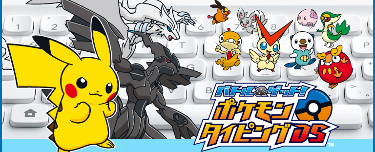
N.O.M読者のみなさんの中には、パソコンで楽しみながらキーボード操作を学べる、いわゆるタイピングソフトを試したことがある方もいるかもしれません。この『バトル＆ゲット！ ポケモンタイピングDS』も、そうしたタイピングソフトの一種です。
しかし、タイトルに『ポケモン』とあるからには、ただのタイピングソフトではありません。実際にプレイしてみると、タイピングがより楽しくなるような仕掛けがあったり、キーボードにさわったことがないような初心者の方でも遊べるような工夫がたっぷりとつめ込まれています。
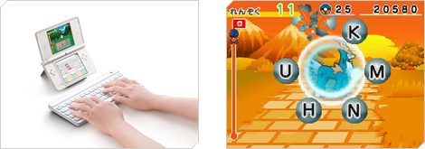
さっそく、アドバイスをくれる仲間でありライバル（？）でもある青葉キイちゃん、めずらしいポケモン調査に命をかける木内エイジさんと一緒にポケモンの調査に出発しましょう。
キーボードのひとつのキーに、ひとつのコースが割り振られていて、キーを押すとそのコースに移動できるというのがユニークです。
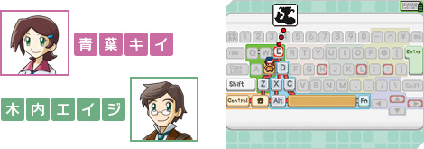
各コースでは、出てくるポケモンの名前をできるだけ正確にキーボードで打ちこみます。最初は一文字だけを入力していけばクリアできますが、先のコースに進むにつれて入力に必要な文字数は増えていきます。そして最終的にはポケモンのフルネームの入力が必要というふうに、次第にできることが増えていきます。特に意識することなく、少しずつ着実にタイピングの技術を覚えられるのです。
実際にプレイしてみると、「ピッピ（PIPPI）」のように名前が短いポケモンは簡単ですが、「コイキング（KOIKINNGU）」に意外と苦戦したりします。また、動きの素早いポケモンに逃げられそうになるスリルや、タイピングがギリギリ間に合ったときの爽快感はバツグンです。
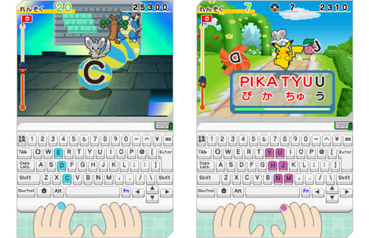
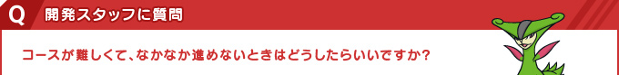
ミスタイプが少なければ、先に進めないことはまずありません。無理に急がないことがコツです。
コースをクリアするとスコアのランキングが表示され、達成度によって金／銀／銅3種類のメダルがもらえます。より速く正確に入力できると得点も大きく伸びますが、特にノーミスで連続して入力できると多くの得点がもらえます。かといって、完璧に打ちこもうとボヤボヤしていると、入力している途中でポケモンに逃げられてしまいます。
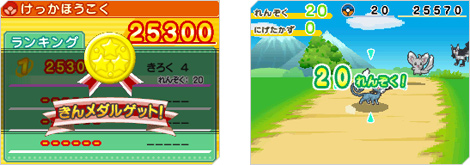
速く入力しようとしすぎてもダメだし、ゆっくり正確に入力しようとしすぎてもダメ。ついついあせってしまいがちですが、あわてず落ち着いて、速さと正確さのバランスを取りながら打ちましょう。
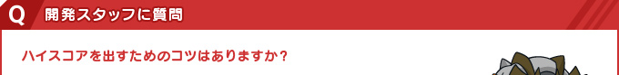
また、コースに出てくるポケモンを覚えて、ポケモン名が表示されるより前に名前を入力することで、よりハイスコアを目指せます。
メダルをたくさん集めると、タイピストとしての称号をもらえたり、下画面に出てくるキーボードのデザインや、入力するときの音などを変えられるようになります。「じぶんのへや」の「タイピストカード」では、現在の自分の称号だけでなく、タイピングの正確さや速さ、メダルの数などのトータルな情報を確認できます。
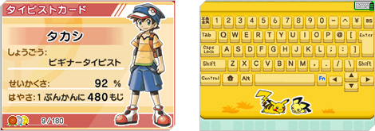
また「じぶんのへや」では、「けんきゅうノート」で調査したポケモンの一覧も見ることができます。ポケモンの種類から高さ・重さまで、詳細な情報が載っているので、ポケモンファンならずとも必見です。タイピングの腕を磨くだけでなく、できるだけたくさんのポケモンを見つけ出して、「けんきゅうノート」のコンプリートを目指してみるのも楽しいでしょう。
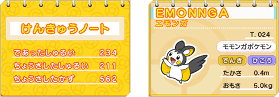
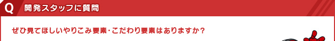
※
本特集3ページ目の「タイピングマスターを目指そう」を参照
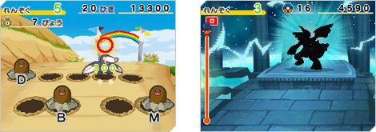